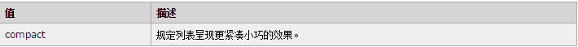
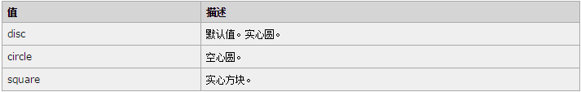

任何主流浏览器都不支持 compact 属性。
代码： <ul compact="compact"> <li>Coffee</li> <li>Tea</li> <li>Milk</li> </ul>
在 HTML 4.01 中，不赞成 compact 属性；在 XHTML 1.0 Strict DTD 中，不支持 compact 属性。请使用 CSS 代替。
<ul type="square"> <li>Coffee</li> <li>Tea</li> <li>Milk</li> </ul> <ul type="circle"> <li>Coffee</li> <li>Tea</li> <li>Milk</li> </ul>
在 HTML 4.01 中，不赞成 type 属性；在 XHTML 1.0 Strict DTD 中，不支持 type 属性。请使用 CSS 代替。